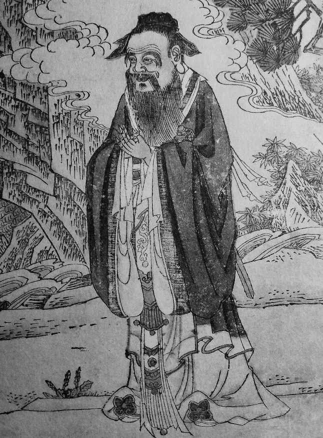

我们前面论述的混乱和改革深深地影响了中国的思想家，迫使他们重新评估自己的传统，或将其抛弃，或使之适应过渡时期的需要。因而，东周时期是一个思想文化大变动、富有创造力的时期，它使人联想起希腊的理性主义哲学家和印度的佛陀以及其他宗教改革者在类似情况下所取得的成就。
由于中国文明具有注重现世的性质，所以中国杰出的思想家都倾向于首先当注重实际的政治家，对争取各国统治者接受他们的观点很感兴趣。他们在旅行和辩论的过程中，吸引信徒，逐渐形成各种哲学学派。当时思想十分活跃，以致中国人把这一时期称为“诸子百家”时期。这里，我们将探讨存在过许多世纪、对中国文明的发展有重大影响的几家学派。
虽然这些学派的创立者往往是一些大胆的改革者，但他们几乎全都认为在遥远的过去有一个黄金时代，渴望能从这一黄金时代得到启发。这一倾向在大多数文明中都可见到，但是，对过去的意识和崇拜在中国人中表现得特别强烈。因此，他们小心地保存和研究较早时期的著作，认为这些著作是处理私事和公众事务所必不可少的。

图56 孔子像（中国明代刻本）。
这些古代著作中最重要的是“五经”，它们由诗歌、民间传统思想和历史文献组成。在研究并利用这些经典的哲学导师中，最为杰出的是孔子。他的影响深远且持久，所以过去2000多年间，中国人的生活方式可以用一个词即“儒教”来概括。孔子于公元前551年出生于一个贫困的下等贵族家庭，他必须在这个世界上求得成功。而他当时面临的世界是没有希望的，到处都是分封割据的混乱状态，无论在宗教还是世俗方面，都没有一种较高的权力可以赢得国民的忠诚。这种情形驱使孔子周游于诸国朝廷之间，希望寻得一位统治者，能采纳他关于理想政治的见解。他确实得到过几个较小的职位，但他对实际政治的影响实在是微不足道的，所以，他转而教育年轻人，希望他们能较有效地贯彻他的训导。
孔子终于发现自己的特长并加以发挥。他证明自己是一个具有罕见的热情和擅长教育的教师。现存史料把他描写成一个引人注目、魅力四射的人——明智，仁慈，感伤于时局的荒唐，深信自己能够恢复社会的宁静，同时具备一种含蓄的幽默感。孔子的学说从根本上说是保守的。他不打算损害现存的社会秩序和社会关系，主张“君君、臣臣、父父、子子”。不过，在他坚持统治者有统治权力的同时，他还坚持统治者应在合理的道德原则基础上进行统治。他和柏拉图一样，要国王做贤者，认为如果他们具有君子的五常——仁、义、礼、智、信，就能成为贤者。
孔子在迷信严重、恐惧超自然物的时代里，也是一个理性主义者。当时的人们坚信梦的预兆意义，坚信种种占卜术，也坚信死者的灵魂具有令人畏惧的力量。孔子虽然承认鬼神和上帝，但在其学说中基本上对它们持存而不论的态度。他说，“知之为知之，不知为不知”，又说，“未知生，焉知死？”
孔子的学说在他生前并没有被普遍接受，更不用说贯彻了。但是，它们最终还是流行开来，并成为国家的正统信条。一个原因在于，他的观点从根本上说是保守的，他接受现状，这自然受到上层统治者的欢迎。另一原因是，他强调道德原则，认为道德原则是恰当地行使权力的先决条件。最后，在孔子去世两个多世纪后，随着汉帝国的建立，官吏们变得不可或缺，而孔子的学说正为他们提供了一门官场哲学。正如一位著名的儒家学者在提醒汉朝的缔造者时所说的：“马上得天下，安能马上治之？”
孔子的学说
儒家首先是一个解决日常生活中各种问题的实用性道德体系。它主要强调礼仪和社会责任，这一点可从以下几节中看出来：*
5个人
通过礼仪规则，可以塑造性格。
礼仪规则是塑造人的性格的工具。它们可以消除人的一切任性的行为，增加人的天性中的美好的东西。用礼仪规则来要求自己，可以不犯错误；用礼仪规则去要求别人，可以使人不入歧途。
家庭
一个超越常人的人必须做到：父母健在时，尽心奉养父母；父母过世后，全心供奉父母。他主要想的是如何在一生中不使父母受辱。
孝道有三个等级：最高级是给父母带来荣誉；次一级是不使父母受辱；最低一级是仅仅能养活父母。
父母健在时，要对他们表示尊敬和爱戴；父母过世后，则要对他们表示伤痛和悲哀——这就履行了活着的人的全部义务。
政府
好的政府能做到使近的人感到快乐，远的人受到吸引。
民为贵……君为轻。
百姓足，君孰与不足？百姓不足，君孰与足？
当君主乐于遵守礼仪规则时，他的臣民就乐于听从他的召唤来为他服务。
如果君主要求他的臣民拥有某些品质，那他自己就必须首先拥有那些品质；如果君主想要他的臣民弃绝某些品质，那他自己就要先弃绝那些品质。
教育和艺术
要维持一个教育体系，一个难点就是要确保社会对教师的尊重；只有确保了这一点，教师所教的知识才会得到尊重；而知识得到尊重，人们才知道如何尊重学习。
学者应当不断追求有德性的东西，并在艺术中找到娱乐。
音乐产生人性所不能没有的快乐。
* M. M. Dawson, The Ethics of Confucius（Putnam's, 1915）, pp. 2—5，167—168，255—257.
公元前2世纪，孔子的学说被宣布为帝国的官方教义或官方信仰，其经典著作成为学者和政治家的主要研究对象。直到2000多年后，也就是1911年清王朝覆灭为止，孔子学说一直在中国居统治地位。实际上，即使那时以后，孔子的影响也还继续存在，因为民国总统蒋介石极力主张要尊崇儒家思想，要运用其原则来解决民国所存在的问题。直到现在，中国台湾地区仍将孔子的生日作为教师节来庆祝。
孔子学说之后，中国最有影响的哲学是道家学说。这是可以理解的，因为这两家学说正好相互补充，满足了中国人民在理智和感情上的需要。孔子学说强调的是礼仪、顺从和社会责任，而道家学说则强调个人的种种奇念怪想和顺从大自然的伟大模式。这一模式被解释为“道”，也就是“路”，所以道家学说的信徒现被称为道教徒。顺从道的关键在于抛弃志向，避开荣誉和责任，在沉思冥想中回归大自然。理想的臣民有粗大的骨骼、强壮的肌肉和空空如也的脑袋，而理想的统治者则应该“使其人民蒙昧，无欲求……填饱他们的肚子……无为而治”。
与孔子学说和道家学说完全不同的是法家学说。法家人物都是些注重实践的政治家，而不是哲学家；他们关心的是改革社会，以加强他们所尊奉的诸侯的力量，使诸侯们能进行战争，用武力统一国家。他们认为贵族是过去遗留下来的、诸侯们所无法依靠的无用的人，该用国家的军事力量予以清除；而人民群众则应被强迫从事生产劳动。他们把商人和学者看作可有可无或多余的人，因此不可宽容待之。生活的各个方面都要由法律加以详细的规定，法律是专为促进国家的经济和军事力量而制定的。指导统治者行为的不应是受儒家学者赞美的仁慈和公正这些传统美德，而应是他们对权力和财富的需求。
法家的这些原则被秦统治者成功地用来征服其他诸侯，建立第一个帝国。然后他们又用一贯无情的手段将严密的组织扩大到全国，不过，其结果正如我们将看到的，引起了一个反作用，使帝国在其创立者去世后没几年就被推翻。法家学说信誉扫地，而儒家学说则成为永久的正统信条。从此以后，儒家学说独占社会尊重和政府职位。这样，其他学派也就被渐渐淡忘了；道教因为吸收了民间流传的各种迷信和有关精灵、恶魔的传说，成为未受过教育的群众的宗教，虽然受到儒家文人学士和官员的鄙视，但也得到了一定的宽容。